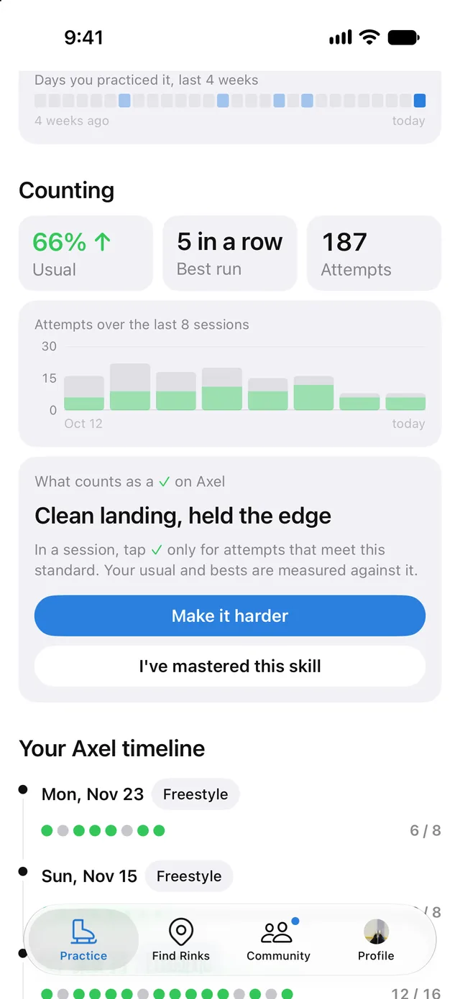
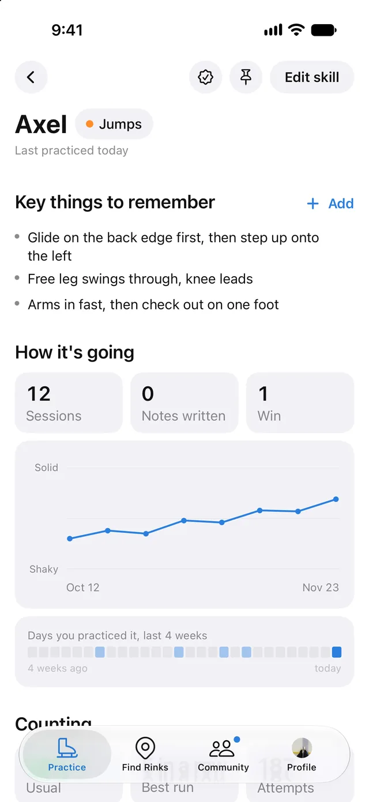

Rinkfolio: Figure Skating Log
Find rinks and track practice
Rinkfolio is a free figure skating practice log for skaters at every level: count every attempt on your jumps, spins and other skills, and see how each one is going. It also has a map of nearly 24,000 ice rinks in more than 100 countries.
Available on iOS
Android beta: DM @rinkfolio or email us to join
Count every attempt
Start a session at the rink and tap ✓ or ✗ after each try. The screen stays on, and it works with no signal.

See how it's going
Each skill has its own page with your usual, your best run and your attempts over your last sessions, plus every session you've practiced it.

Remember your coach's tips
Keep the key things to remember for each skill, decide what earns a ✓, and after a session, rate how each skill felt, from shaky to solid, to see how it changes.

Find rinks
Browse a worldwide map of indoor and outdoor ice rinks, as well as wild ice spots. Save the ones you want to visit, mark the ones you've skated at, set your home rink(s), and share notes and photos about rinks for other skaters.

Skate with others
Follow other skaters, react to their notes and wins, and share your profile with a link or QR code.

Rinkfolio is built with feedback from the skaters who use it. Questions or ideas? See common questions or email rinkfolioapp@gmail.com.